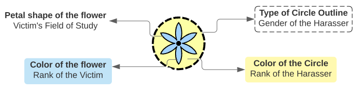
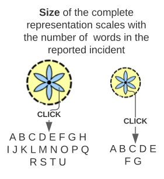

You are about to view an interactive visualization, which sheds light on the issue of sexual harassment in academia.
The visualization shows a subset of the dataset collected through an anonymous online survey “Sexual Harassment in the Academy”.
Thanks to Dr. Karen Kelsky , for starting the survey that gives victims of sexual harassment in academia a space to voluntarily report their assault/incident.
More than 2000 testimonies have been collected since the launch of the survey in late 2017. The dataset includes information like description of incident, rank of the victim and harasser, victim’s field of study, victim's institute type,
gender of the harasser, and other details. This data is highly personal and sensitive.
Learn how to read the visualization


Example - This representation corresponds to an incident where an undergraduate student studying in the field of study “Humanities” was harassed by a staff of gender “Other”.
The relatively large size of the representation means that the victim has reported the incident with many details. These details can be seen by clicking on the incident (circle or flower).
Note:
The Harasser's gender is known, but the victim's gender is not explicitly known. A victim might have chosen to reveal their gender in the incident description or not.
The rank of the Victim and Harasser is either Undergraduate Student, Graduate Student, Staff (non-faculty), Faculty, Chari/head/dean in the vizualization. A chair/head/dean manages all students, faculty, or the entire department.
The right-hand side panel of the interface shows the complete legend for reading the visualization.
Learn how to interact with the visualization
-
By clicking on an incident (circle or flower), you will see details of the incident the victim reported on the left-hand-side panel of the interface. To exit the details mode, click anywhere on the white screen near incidents/circles.
-
Hover anywhere on an incident (circle or flower) to see the key details.
- Use the grey buttons at the top of the visualization to group the visualization by victim field of study, victim rank, harasser rank, harasser type, and institute type.
- To reset the visualization, click on the Reset button at the top of the visualization.
- Click the button in the top-right corner of the interface to access this information again.